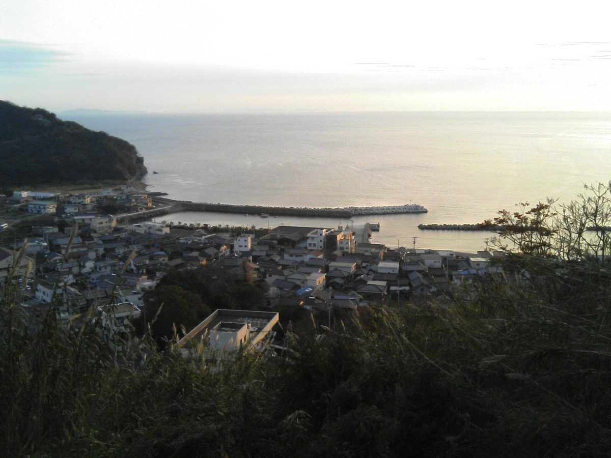

お店について
ひと息

島のくらしと海、そのそばでひと休み
喫茶＆かふぇよっこら処は、長崎県五島市富江町にある喫茶(カフェ)です。
お店の成り立ちや店名の意味など、くわしいことは準備中です。ご興味のある方は、お電話かInstagramでお尋ねください。
店名の「よっこら」という響きから、「ここで腰を下ろして、ひと休み」という場面を連想し、サイトの雰囲気を組み立てました。これは制作側の連想であり、店主様の意図ではありません。
海と空の広がる景色のイメージ
このサイトでは、海と空が広がる景色の写真を使っています。どれもフリー素材で、お店の実際の様子ではありません。

お店の基本情報
| 店名 | 喫茶＆かふぇよっこら処 |
|---|---|
| 所在地 | 〒853-0201 長崎県五島市富江町富江221番地 |
| 電話 | 070-3331-0787 |
| @yocco_ra_sho | |
| 店主・スタッフ | 準備中(お問い合わせください) |
| 営業時間 | 準備中(お問い合わせください) |
| 席数 | 準備中(お問い合わせください) |
| 創業・店名の由来 | 準備中(お問い合わせください) |
ご来店・ご質問はお電話かInstagramで